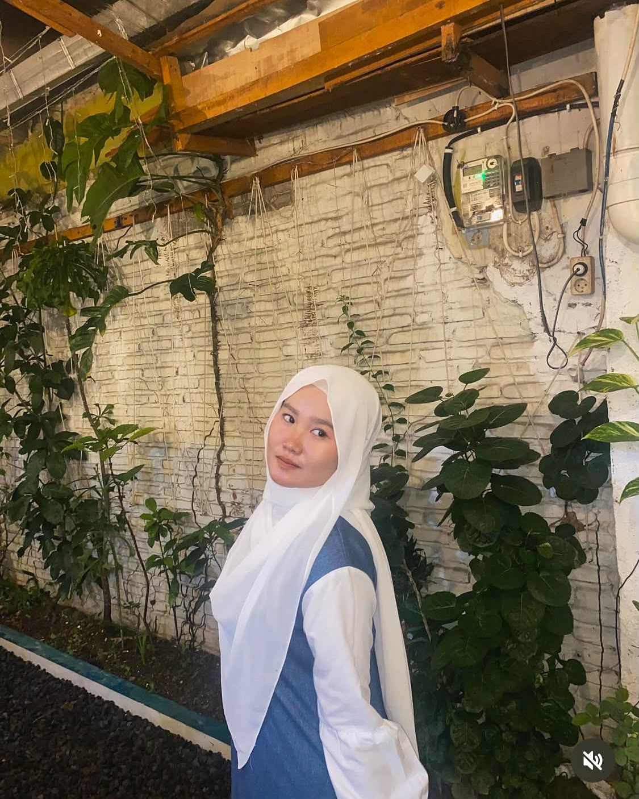
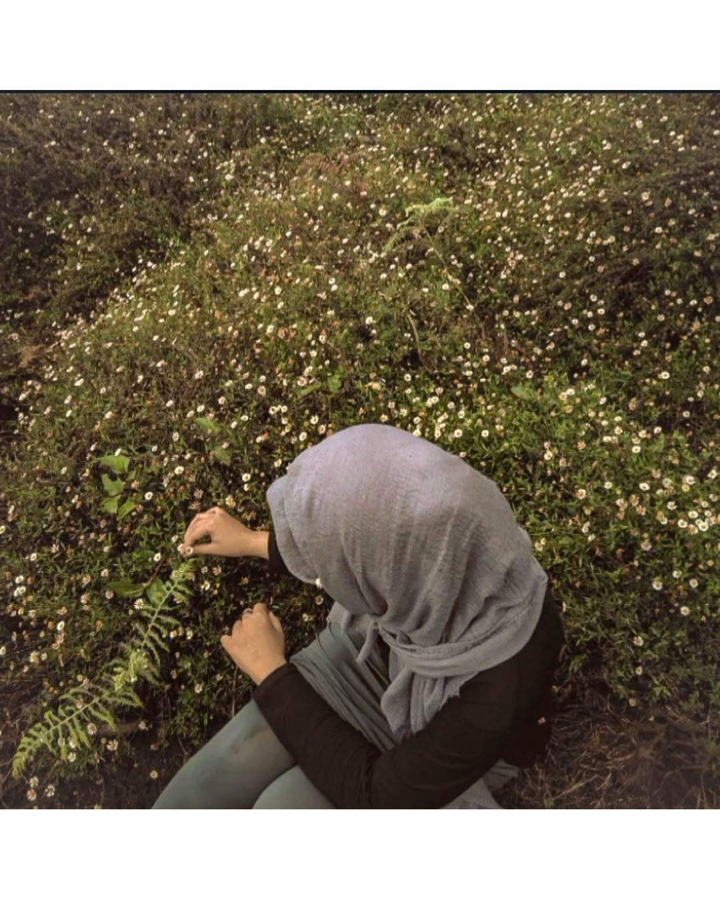
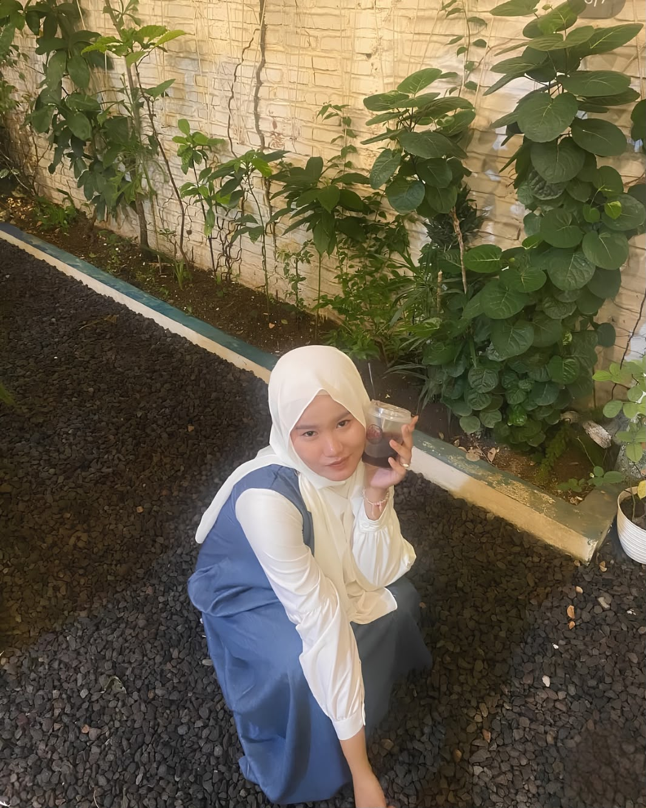

Makasih ya udah hadir di hidupku ❤️
Semoga kita selalu diberi kebahagiaan dan cerita indah.
Makasih ya udah hadir di hidupku.
Semoga hari-harimu selalu dipenuhi hal baik, dan semoga aku bisa jadi salah satu alasan kamu tersenyum.
❤️